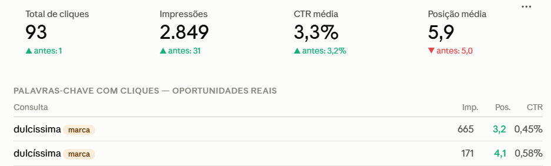

Este documento reúne o que consigo demonstrar com dados reais sobre o trabalho de presença digital em um negócio local — site, Google e Instagram — totalmente orgânico, sem investimento em mídia paga.
O que eu fiz
Criado do zero em fevereiro de 2026, com páginas de produtos, Google Perfil integrado e rota de contato direto para WhatsApp.
Perfil da Empresa otimizado, SEO local de descrição e palavras-chave, unificação de domínio.
Reestruturação em abril de 2026, publicação semanal ininterrupta durante 45 semanas, e recuperação completa após ataque à conta em maio.
Nenhum real foi investido em mídia paga no período. Site e Instagram foram trabalhados simultaneamente, então o crescimento em vendas não pode ser atribuído a um único canal.
Resultado de negócio
Mesmo período do ano anterior versus este ano. Bolos confeitados e doces gourmet sob encomenda.
Este é o número que fala a língua de qualquer dono de negócio. Tudo mais é infraestrutura para alcançar isso.
Tráfego orgânico
Mesmo domínio, mesmo negócio. A única coisa que mudou foi a estrutura e o conteúdo do site.
| Google Search Console | Antes (até 26/04) | Depois (26/04 a 07/08) |
|---|---|---|
| Cliques | 1 | 93 |
| Impressões | 31 | 2.849 |
| Taxa de cliques | 3,2% | 3,3% |

O site começou a aparecer para buscas como "doceria Rio de Janeiro", "bolo pronta entrega" e "bolo de aniversário perto de mim". Posição média de 5,9 significa que o site está competindo em primeira página para esses termos.
Presença social
Em maio de 2026, a conta do Instagram sofreu um ataque e o alcance despencou para metade. Dois meses depois de publicação semanal ininterrupta, o alcance voltou e ficou 18% acima do patamar anterior.
Alcance: 27.000. Publicação semanal começou a dar ritmo consistente.
Alcance: 12.000. Queda de 56% devido ao comprometimento da conta.
Alcance começou a subir com as publicações semanais consistentes.
Alcance: 32.000. 18% acima do patamar pré-crise, consolidado.
A consistência não é métricas de vaidade. Foi o que recuperou o algoritmo da plataforma após uma falha de segurança. É isso que leva a 85% de crescimento em vendas.
Como ler este material
Próximo passo
Uma hora de conversa, análise do que você já tem e um plano de 30 dias por escrito. Se fizer sentido seguir, a gente segue. Se não fizer, você fica com o plano do mesmo jeito.